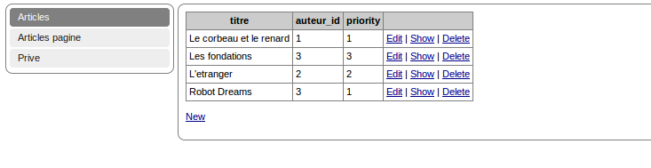

Tutorial pour commencer
Pré-requis
serveur apache2, php >= 5.2Un ptit téléchargement please
Rendez-vous sur le site, cliquez sur le lien de téléchargement "télécharger" et télécharger le package.Dézipper l'archive zip téléchargée
Dézipper puis déplacer le repertoire dans le repertoire web de votre serveur web apacheSelon votre installation (quelques exemples)
linux (/var/www ou /usr/local/apache2/htdocs ou /home/apache/htdocs)
windows (c:/wamp/www/)
mac osx (/MAMP/www)
Le contenu de l'archive
Vous voyez à la racine 3 répertoires- Builder
- lib
- Projects
Le Builder est le générateur web du framework (plus d'infos ici),
le répertoire Lib contiendra toutes vos bibliothèques externes, ici il contient le mkframework
enfin Projects, contiendra les projets que vous génererez avec le Builder
Rendez-vous sur l'interface
Ouvrez votre navigateur sur l'adresse web où se situe le framework http://localhost/mkframeworkPackage-*.*.*/BuilderL'adresse dépendant d'où est situé le framework, du nom du répertoire...
Vous y êtes, place aux précisions
Vous venez d'installer le framework ou plus exactement le builder du mkframeworkA partir de là, vous pouvez générer un nouveau projet en un clic , celui-ci sera créé dans le repertoire Projects/ du mkframework.

Pour information, le projet généré ne contient pas la librairie du mkframework, elle le lie, pour permettre de ne pas gaspiller de place en redondant la librairie sur chaque nouveau projet généré.
La librairie étant la seule partie transversale de vos applications, elle n'est pas incluse dans les nouveaux projets, mais c'est la seule.
Le répertoire plugin, lui, est propre à chaque projet.
note: vous pouvez faire de même avec le répertoire plugin en changeant son chemin dans le fichier conf/site.ini.php
Paramétrons le fichier conf/connexion.ini.php
En ouvrant le fichier conf/connexion.ini.php de votre projet (dans Projects/)On peut remarquer qu'il y a plusieurs type de configuration pré-remplies
mysql.dsn="mysql:dbname=blog;host=localhost"
mysql.sgbd=pdo_mysql
mysql.hostname=localhost
mysql.database=blog
mysql.username=root
mysql.password=root
Vous pouvez remarquer un module article, mais où est la base ?
Le module article du projet "avec exemples" est une base "xml" du mkframework, elle est située dans data/xml/base/article
Une base de donnée xml étant constitué
- d'un repertoire du nom de la table
- d'un fichier structure.xml, contenant les colonnes de la table
- et d'un fichier max.xml contenant l'id maximum.
Petite présentation des répertoires
conf/
Contient les fichiers de configurations, comme vous pouvez le voir le framework ne manque pas de paramètres :)data/
Contient toutes les ressources d'une applications (images,cache,xml...)layout/
Contient les "layouts" : ces templates globaux où sont affichés les différentes vues.model/
Contient les classes de vos tables, un fichier par table, contenant deux classes model_matable et row_matableVous pouvez avoir plus de détail dans la page "ORM"
module/
Contient les modules du site.Un module se construisant ainsi
un répertoire portant le nom du module,
un fichier main.php,
et un repertoire "view" contenant les fichiers de vues.
plugin/
Contient les classes métiers/pratique du site qui peuvent être réutilisées dans d'autres projets.note: on peut remarquer quelques classes comme plugin_auth, plugin_routing qui auraient pu être dans la librairie du framework
Mais en faisant ainsi on permet un fonctionnement plus souple en vous laissant la main pour modifier, personnaliser ceux-ci si besoin.
note2: vous pouvez parametrer ces classes dans le fichier conf/site.ini.php
public/
Répertoire public du site aussi appelé "web root public"Il contient les fichiers css, javascript ainsi que le script frontal index.php
Conclusion
Comme vous avez pu le remarquer, ce framework est très modulable, vous pouvez apprendre à l'utiliser très rapidementVous avez également un article sur le site de developpez.com ici:
http://php.developpez.com/index/redirect/14907/Presentation-du-mkframework-par-Imikado/